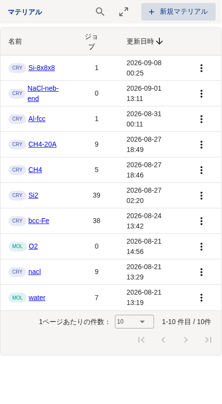
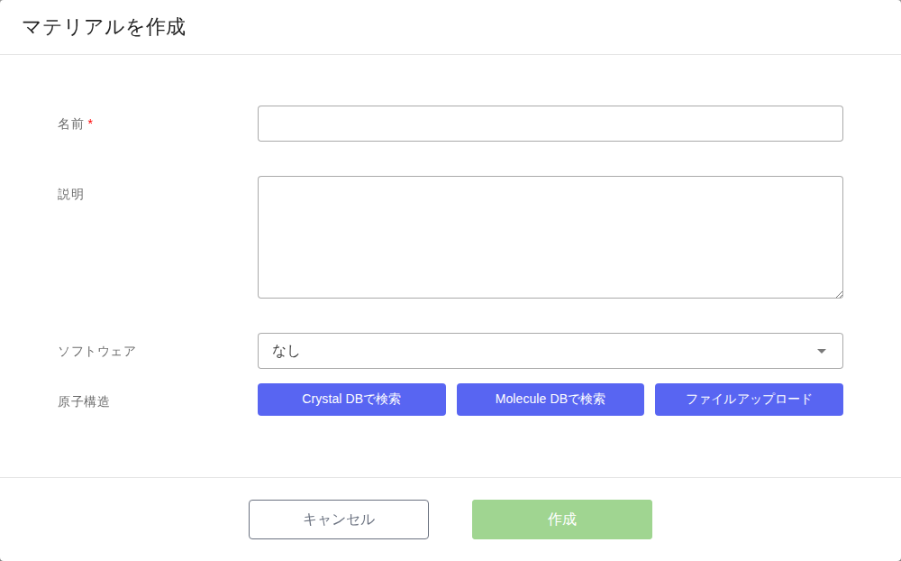
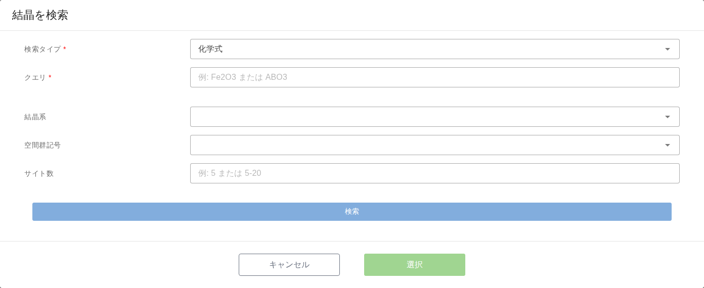
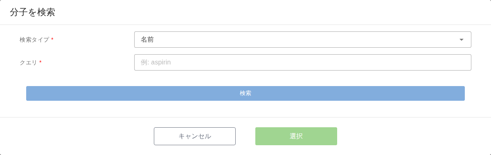
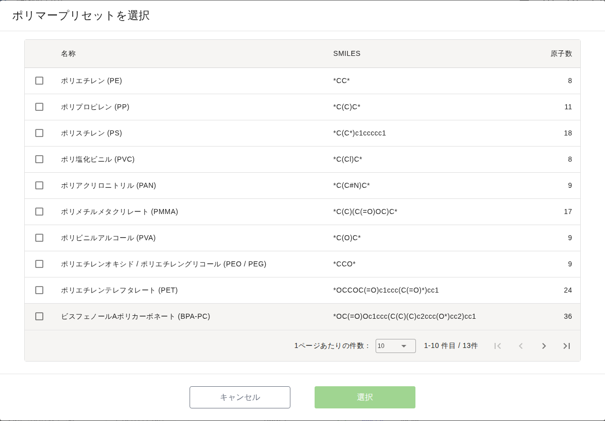
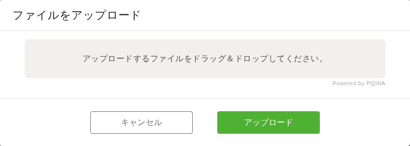

6. Material の登録
注釈
本章は Quloud Ver.7.0 を対象としています。記載内容の確認日は 2026 年 9 月 8 日です。
6.1. 概要
Material は計算の対象となる原子構造です。原子構造の指定には 3 つの方法があります。
結晶データベースから選ぶ — Materials Project を検索します
分子データベースから選ぶ — PubChem を検索するか、ポリマープリセットから選びます
ファイルをアップロードする — 手元の構造ファイルを読み込みます
登録した Material をモデラーで加工して別の Material にすることもできます （モデリング の章）。
6.2. 前提
登録先のプロジェクトに参加していること
テナントが利用制限中でないこと（計算 Job の実行 の章）
6.3. 操作手順
6.3.1. 1. 「新規マテリアル」を押す
Material はプロジェクトごとに登録します。ホーム画面の「プロジェクト」から プロジェクトを開き、「マテリアル」の右上にある「＋ 新規マテリアル」を押します。

図 6.1 プロジェクト詳細画面のマテリアル一覧
一覧の名前の左にあるラベルは構造の種類です。CRY が結晶、MOL が分子です。
6.3.2. 2. 名前と原子構造を指定する
「マテリアルを作成」ダイアログが開きます。

図 6.2 「マテリアルを作成」ダイアログ
項目 |
内容 |
|---|---|
名前 |
必須です。一覧に表示される名前です。 |
説明 |
任意です。Material 詳細画面に表示されます。 |
ソフトウェア |
既定は「なし」です。「なし」以外を選ぶと、Material と同時に計算 Job も 作られます（この章の「入力ファイルから Job ごと作る」）。 |
原子構造 |
3 つのボタンのどれかで指定します。指定するとダイアログの下に 選んだ構造やファイルの名前が並びます。 |
原子構造を 1 つ以上指定するまで「作成」は押せません。
6.3.3. 3. 「作成」を押す
Material が登録され、プロジェクトのマテリアル一覧に追加されます。 一覧の名前を押すと Material 詳細画面に移ります（Material 詳細画面 の章）。
6.4. 結晶データベースから登録する
「Crystal DBで検索」を押すと、Materials Project の検索ダイアログが開きます。

図 6.3 「結晶を検索」ダイアログ
「検索タイプ」で検索の仕方を選び、「クエリ」に検索語を入れて「検索」を押します。
検索タイプ |
クエリに入れるもの |
|---|---|
マテリアルID |
Materials Project の ID（ |
化学式 |
化学式（ |
元素系 |
元素の組み合わせ（ |
元素 |
含まれる元素 |
「結晶系」「空間群記号」「サイト数」は任意の絞り込みです。サイト数は 5 のような
値のほか 5-20 の範囲でも指定できます。
検索結果の表から 1 件を選び、「選択」を押すと「マテリアルを作成」ダイアログに戻ります。 表の「マテリアルID」は Materials Project のページへのリンクです。
6.5. 分子データベースから登録する
「Molecule DBで検索」を押すと、次の 2 つから選ぶメニューが開きます。
項目 |
内容 |
|---|---|
PubChemで検索 |
PubChem を検索して分子構造を取り込みます。 |
ポリマープリセットから選択 |
あらかじめ用意されたポリマーの繰り返し単位から選びます。 |
6.5.1. PubChem で検索する

図 6.4 「分子を検索」ダイアログ
検索タイプは「名前」「化学式」「CID」「SMILES」「InChI」「InChIKey」から選べます。 入力例はクエリ欄に表示されます。
注釈
3D 構造データを持たない分子は登録できません。検索結果に 「3D構造データがありません」と表示されます。
6.5.2. ポリマープリセットから選ぶ

図 6.5 「ポリマープリセットを選択」ダイアログ
繰り返し単位の SMILES と原子数が一覧されます。1 件を選んで「選択」を押します。 高分子の計算（RadonPy）で使います。
6.6. ファイルから登録する
「ファイルアップロード」を押すと、ファイルを受け取るダイアログが開きます。

図 6.6 「ファイルをアップロード」ダイアログ
領域にファイルをドラッグ＆ドロップするか、領域を押してファイルを選び、 「アップロード」を押します。複数のファイルをまとめて指定できます。
読み込める構造ファイルの形式は次のとおりです。
形式 |
ファイル |
|---|---|
CIF |
|
XYZ |
|
VASP |
|
XSF |
|
LAMMPS |
|
計算ソフトの入力ファイル |
Quantum ESPRESSO、OpenMX、RSDFT の入力ファイル |
上記以外でも、構造として解釈できる形式であれば読み込めることがあります。 解釈できない場合は登録時にエラーになります。
6.6.1. 入力ファイルから Job ごと作る
「ソフトウェア」で「なし」以外を選ぶと、アップロードした入力ファイルをそのまま使う 計算 Job が、Material と同時に作られます。 計算条件を画面で組み立てるのではなく、 手元で用意した入力ファイルで計算したい場合に使います。
選べるソフトウェアは次のとおりです。
ソフトウェア |
主な入力ファイル |
|---|---|
FLARE |
|
LAMMPS / LAMMPS+CHGNet |
|
OpenMX |
|
Quantum ESPRESSO (PW) |
|
Quantum ESPRESSO (DOS) |
|
Quantum ESPRESSO (BAND) |
|
Quantum ESPRESSO (BAND with spin) |
上記に |
RSDFT |
|
ファイル名は決まっています。 「作成」を押した時点で内容が検査され、
必要なファイルが足りない場合や中身が想定と違う場合はエラーが表示されます。
擬ポテンシャルファイル（.upf など）も一緒にアップロードできます。
作られた Job は Status が「Registered」なので、実行は 計算 Job の実行 の章の手順で行います。
6.7. 注意事項
同じ Material を複数のプロジェクトから使うことはできません。 Material は 1 つのプロジェクトに属します。別のプロジェクトで使いたい場合は、Material 詳細画面の 「他のプロジェクトへ移動」で移します（Material 詳細画面 の章）。
Material の削除は、その Material を使っている Job がある場合に制限されます （Material 詳細画面 の章）。
外部データベースの検索は、Materials Project と PubChem に問い合わせます。 応答が無い場合は時間をおいてやり直してください。